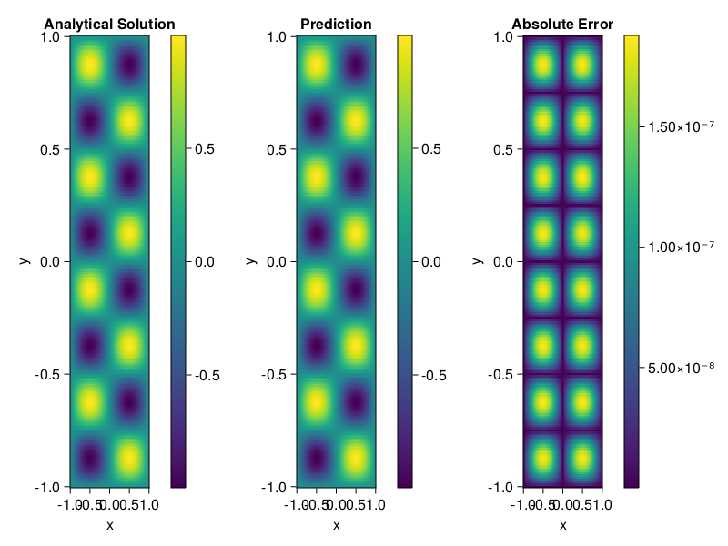

Helmholtz equation
Let us consider the Helmholtz equation in two space dimensions
\[\begin{aligned} &\Delta u(x, y)+k^{2} u(x, y)=q(x, y), \quad(x, y) \in \Omega:=(-1,1)^2 \\ &u(x, y)=0, \quad(x, y) \in \partial \Omega \end{aligned}\]
where
\[q(x, y)=-\left(a_{1} \pi\right)^{2} \sin \left(a_{1} \pi x\right) \sin \left(a_{2} \pi y\right)-\left(a_{2} \pi\right)^{2} \sin \left(a_{1} \pi x\right) \sin \left(a_{2} \pi y\right)+k^{2} \sin \left(a_{1} \pi x\right) \sin \left(a_{2} \pi y\right).\]
The excat solution is $u(x,y)=\sin{a_1\pi x}\sin{a_2\pi y}$. We chose $k=1, a_1 = 1$ and $a_2 = 4$.
using ModelingToolkit, IntervalSets, Sophon, Lux
using Optimization, OptimizationOptimJL
@parameters x,y
@variables u(..)
Dxx = Differential(x)^2
Dyy = Differential(y)^2
a1 = 1
a2 = 4
k = 1
q(x,y) = -(a1*π)^2 * sin(a1*π*x) * sin(a2*π*y) - (a2*π)^2 * sin(a1*π*x) * sin(a2*π*y) + k^2 * sin(a1*π*x) * sin(a2*π*y)
eq = Dxx(u(x,y)) + Dyy(u(x,y)) + k^2 * u(x,y) ~ q(x,y)
domains = [x ∈ Interval(-1,1), y ∈ Interval(-1,1)]
bcs = [u(-1,y) ~ 0, u(1,y) ~ 0, u(x, -1) ~ 0, u(x, 1) ~ 0]
@named helmholtz = PDESystem(eq, bcs, domains, [x,y], [u(x,y)])\[ \begin{align} \frac{\mathrm{d}}{\mathrm{d}y} \frac{\mathrm{d}}{\mathrm{d}y} u\left( x, y \right) + \frac{\mathrm{d}}{\mathrm{d}x} \frac{\mathrm{d}}{\mathrm{d}x} u\left( x, y \right) + u\left( x, y \right) =& - 166.78 \sin\left( 3.1416 x \right) \sin\left( 12.566 y \right) \end{align} \]
Note that the boundary conditions are compatible with periocity, which allows us to apply BACON.
chain = BACON(2, 1, 5, 2; hidden_dims = 32, num_layers=5)
pinn = PINN(chain) # call `gpu` on it if you want to use gpu
sampler = QuasiRandomSampler(300, 100)
strategy = NonAdaptiveTraining()
prob = Sophon.discretize(helmholtz, pinn, sampler, strategy)
@time res = Optimization.solve(prob, BFGS(); maxiters=1000)u: ComponentVector{Float64}(filters = (filter_1 = (bias = [0.8626632856490963; -0.9012544195962673; … ; -0.04501088388364163; -0.32554658536058306;;]), filter_2 = (bias = [0.8539691226614454; -0.4362881251134093; … ; -0.495811551116831; -0.6559555751874934;;]), filter_3 = (bias = [-0.6699092377705806; 0.4763694974191711; … ; -0.592029281503636; 0.5286520468278396;;]), filter_4 = (bias = [0.6222018522484632; -0.14375257880524134; … ; -0.9516882059225231; -1.1503662496854818;;]), filter_5 = (bias = [0.6476244714098093; 0.3630632642592098; … ; 0.3335470671608517; -0.43353283916523344;;])), linear_layers = (layer_1 = (weight = [0.2860085670932325 0.09406066803265971 … -0.32268150078920776 -0.19457030660676788; 0.20664618901279475 -0.29425934639791607 … 0.2103949617358593 -0.27254318230481445; … ; -0.3086724118332921 -0.07174434531811362 … 0.2451958050490335 -0.27979737812518957; -0.21827187559691755 -0.0052621747477493 … -0.11847478139403617 -0.0053915024083912], bias = [0.011145226590489726; -0.003108012772147822; … ; 0.01036827825920006; -0.006420430334173104;;]), layer_2 = (weight = [0.2168839400449347 -0.31393123109854976 … 0.2983111346547572 -0.2762660518679892; 0.12945498096266875 -0.044850058792672884 … 0.26022994949099204 0.3420107497413118; … ; -0.10432333637131959 -0.20219600465774784 … -0.18721213110457788 0.37554444575836143; -0.047972799838430474 -0.11874851532582328 … -0.16080328312849984 -0.18379380723723307], bias = [-0.018724550343403874; 0.007238756363404042; … ; 0.015006876859467956; 0.008498804702674561;;]), layer_3 = (weight = [0.29442092242664775 -0.4292986526738257 … 0.060626753261802814 0.09869140539635388; 0.24547792018130002 0.39473406211368606 … 0.3016009336820705 0.11407004600625457; … ; -0.22716666587916542 -0.07757081973824088 … -0.058140994246840584 -0.1568365346147887; 0.19543322691448922 0.34419254742836825 … 0.08412061996657301 -0.2586414108145502], bias = [-0.0467937998017694; -0.008148227264962908; … ; -0.017468634089683268; 0.002660228863844106;;]), layer_4 = (weight = [-0.17867621899600142 0.37011230170805626 … -0.21457175675291498 -0.037973023198840924; -0.018223304299675627 -0.14409497701692545 … -0.07120279600561087 -0.08683841161402084; … ; 0.3991760832424509 0.014274648228518087 … -0.09267125206593793 0.2927779078219751; -0.12950044675694253 0.05289026217221745 … -0.24320872178617872 0.032832605254850086], bias = [0.012370561607262288; 0.0003078176636432384; … ; 0.009217356288256748; 0.02459315663948387;;])), output_layer = (weight = [0.6738432097293132 -0.4320134308178296 … 0.15837978971599456 0.05277682809477713], bias = [-0.012619017399520425;;]))Let's plot the result.
phi = pinn.phi
xs, ys= [infimum(d.domain):0.01:supremum(d.domain) for d in domains]
u_analytic(x,y) = sinpi(a1*x)*sinpi(a2*y)
u_real = [u_analytic(x,y) for x in xs, y in ys]
phi_cpu = cpu(phi) # in case you are using GPU
ps_cpu = cpu(res.u)
u_pred = [sum(phi_cpu(([x,y]), ps_cpu)) for x in xs, y in ys]
using CairoMakie
axis = (xlabel="x", ylabel="y", title="Analytical Solution")
fig, ax1, hm1 = heatmap(xs, ys, u_real, axis=axis)
Colorbar(fig[:, end+1], hm1)
ax2, hm2= heatmap(fig[1, end+1], xs, ys, u_pred, axis= merge(axis, (;title = "Prediction")))
Colorbar(fig[:, end+1], hm2)
ax3, hm3 = heatmap(fig[1, end+1], xs, ys, abs.(u_pred-u_real), axis= merge(axis, (;title = "Absolute Error")))
Colorbar(fig[:, end+1], hm3)
fig